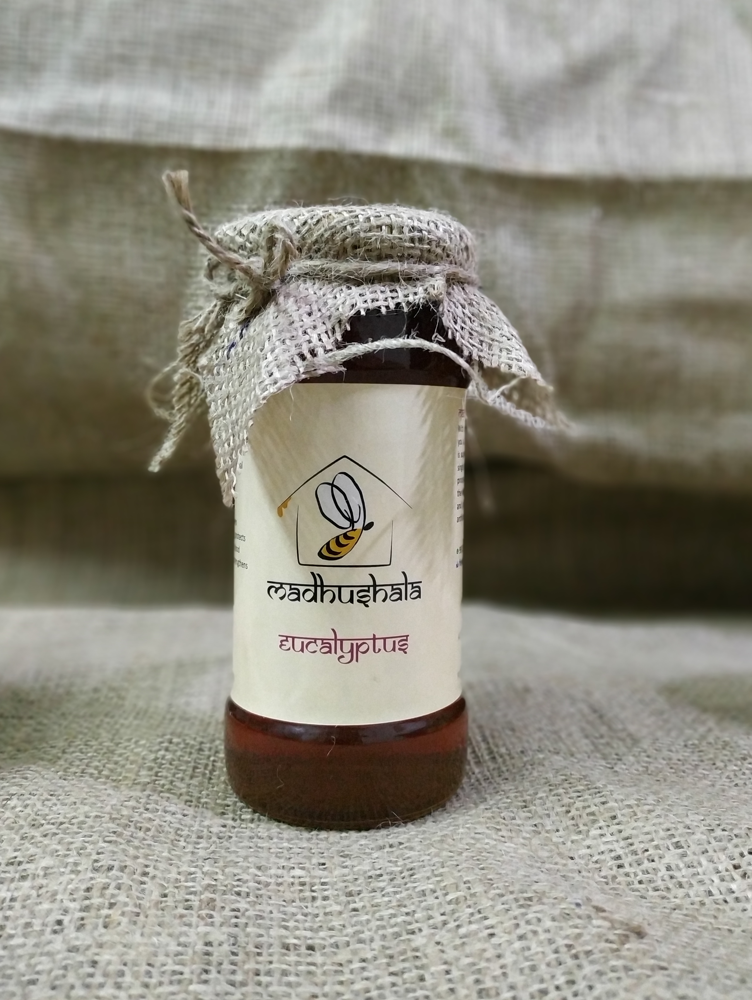
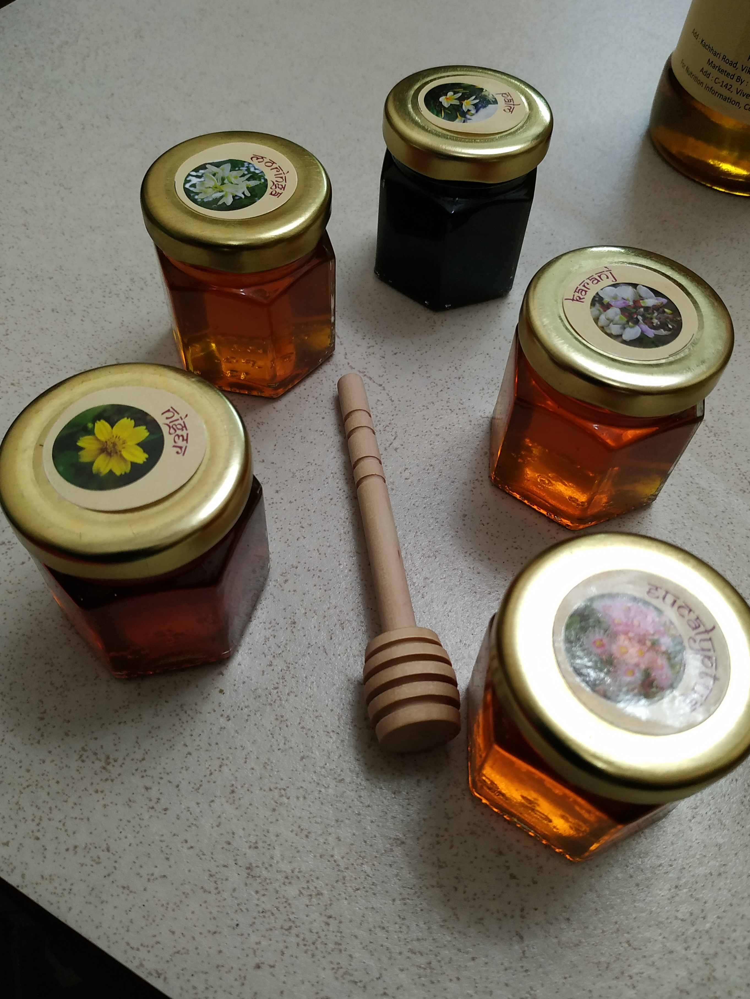
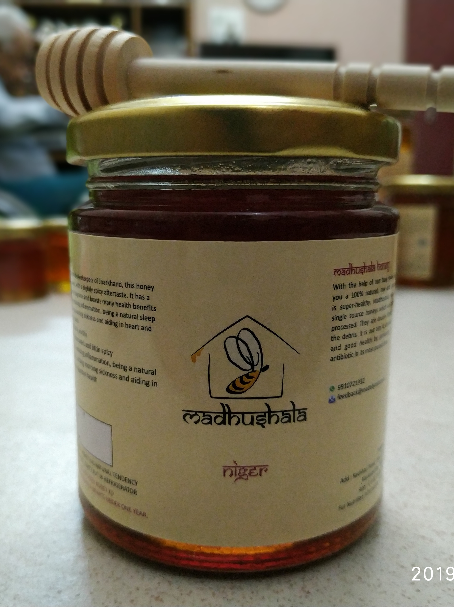

With the help of our busy honey bees, we bring to you a 100% natural, raw and unheated honey that is
super-healthy. Madhushala honey are 100% raw single source honey which are neither blended nor processed.
They are double filtered so as to remove the debris. It is our aim to connect people to nature and good
health by providing the nature's own antibiotic in its most purest form.

1. Regulates Cholesterol Levels
Intake of honey reduces cholesterol in body. The antioxidants in honey can protect the body against
damage from free radicals. Honey can also enhance the effects of an existing heart-healthy diet and
regulate cholesterol levels.
2. Helps Treat Cough And Cold
Honey is an effective cough suppressant. Honey also reduces nighttime coughing and improve sleep in
kids.
A mixture of warm lemon water with honey can help cure cold too – it clears the congestion in the throat
and even prevents dehydration.
3. Maintains Blood Pressure and Improves Heart Health
The antioxidants in honey protect the heart. Honey also reduces the formation of conjugated dienes,
which are compounds created through oxidation, and which are related to the bad cholesterol in the
blood. This, by default, improves heart health.
4. Cuts Diabetes Risk
In case you are wondering if diabetics can consume honey, here’s your answer. The glycemic index of
honey can range anywhere between 45 to 64, which is moderate.
5. Can Help Fight Cancer
The phenolic compounds in honey were found to have anticancer properties and can help prevent various
types of cancer. Honey also exhibits anti-inflammatory activity, which also makes it one of the best
foods for preventing cancer. Honey even modulates the body’s immune system, making it further effective
in cancer treatment.
6. Relieves Acid Reflux
Since honey is rich in antioxidants, and since it can fight free radicals, it can relieve acid reflux
(as the condition in part is caused by free radicals damaging the cell lining of the digestive.
7. Treats Gastric Issues
The antioxidant and antimicrobial properties of honey can help treat a wide range of gastric issues. You
can also mix honey with lemon juice (both in warm water) for better effects.
8. Fights Infections
The antibacterial activity of honey can play a role in treating infections. Honey maintains a moist
wound condition, and its high viscosity provides a protective barrier that prevents infection. In fact,
honey has been in use since ancient times to treat infected wounds


9. Boosts Immunity
Honey contains more of methylglyoxal, the compound that is responsible for honey’s antibacterial
activity. This compound can also contribute to enhanced immunity.
The compound also stimulates the production of cytokines, which are messengers secreted by your immune
cells to organize immune responses.
10. Aids Weight Loss
The unique combination of natural sugars in honey can make it an ideal weight loss food. Substituting
sugar with honey during the day and taking a spoonful of honey with a hot drink before bed can shut down
the sugar cravings in your brain.
11. Relieves Hangover
The fructose in honey is required by the body to break down alcohol into harmless by-products. You can
also spread honey on a toast – doing so adds potassium and sodium to your meal, and this helps the body
cope with alcohol (33).
The fructose in honey also helps your body metabolize and burn off the alcohol in your system. And
according to a Chinese study, honey has anti-intoxication effects. The fructose in honey can help reduce
the concentration of alcohol in the blood (34).
Benefits for the skin
- Fights Acne
- Helps Treat Wrinkles
- Fades Scars
- Softens Chapped Lips
- Treats Dry Skin
- Cleanses Skin
- Helps Whiten The Skin
Using honey along with yogurt can work well. Mix 1 tablespoon of fresh yogurt with 1 ½
tablespoons of
honey. Apply the mixture on your face and leave it on for 15 minutes. Wash off with warm water. Repeat
daily.